Current Affairs — August 2026 · Class 7
Class 7 of the August 2026 monthly series (Ashish Gautam, Adda247) · 40 topics, grouped by exam category.
- Read once with Recall mode off. Hover over (or tap) any dotted name to see its static GK.
- Turn Recall mode on: the key facts are hidden. Say each one before you click to reveal it.
- Take the self-test at the end. Revise again tomorrow, in a week and in a month, using only the Rapid Revision box after that.
1Government, Schemes & Policy
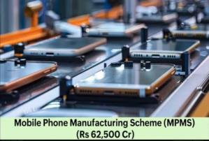
🎯 Likely QCabinet Approves Mobile Phone Manufacturing Scheme (MPMS)
- The Union Cabinet approved the Mobile Phone Manufacturing Scheme (MPMS) with an outlay of ₹62,500 crore.
- Duration: 5 years, FY 2026-27 to 2030-31.
- Aim: strengthen India as a global hub for mobile phone manufacturing and exports.
- Sales-linked incentive of 2.25% to 5% on phones made in India; up to 1.5% extra for higher domestic sourcing of components.
- Indian brands investing in design and R&D get an additional 3% incentive on eligible sales.
- MPMS succeeds the PLI scheme for Large Scale Electronics Manufacturing (PLI-LSEMPLI-LSEMLaunched April 2020 by MeitYIndia is the world’s 2nd-largest mobile phone maker), which ended on 31 March 2026.
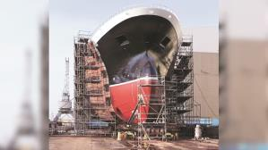
Government Approves Greenfield Shipbuilding Cluster in Porbandar, Gujarat
- MoPSW gave in-principle approval for a Greenfield Shipbuilding Cluster in Porbandar district, Gujarat, under the Shipbuilding Development Scheme (SbDS).
- Site: Kuchhadi, about 2,000 acres, developed through NSHIP-Gujarat (National Shipbuilding and Heavy Industries Park–Gujarat).
- NSHIP-Gujarat is an SPV jointly promoted by MoPSW and the Gujarat Maritime Board.
- Capacity: about 1.2–1.5 million Gross Tonnage a year.
- Also approved under SbDS: a ₹1,570 crore ship repair facility at Vadinar (Gulf of Kutch), by Deendayal PortDeendayal Portformerly Kandla Port, GujaratCochin Shipyard — Est. 1972, KochiGujarat Maritime Board est. 1982 Authority and Cochin Shipyard; it gets assistance of 25% of eligible capital cost.
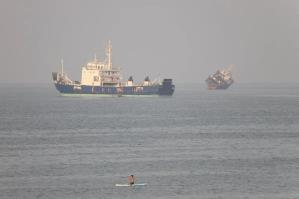
Government Launches ‘Seafarer-First’ Initiative for Indian Seafarers
- Ports, Shipping and Waterways Minister Sarbananda Sonowal launched the ‘Seafarer-First’ response amid the maritime security crisis in West Asia.
- It followed attacks on merchant vessels MT Al Bahiyah and MT Mombasa in the Strait of HormuzStrait of Hormuzlinks the Persian Gulf with the Gulf of Oman; lies between Iran and Oman.
- Real-time, vessel-by-vessel monitoring of Indian seafarers in the Persian Gulf, Strait of Hormuz and Gulf of Oman, whatever the ship’s flag.
- Seafarer = a person working aboard a ship (deck officers, engineers, other crew).
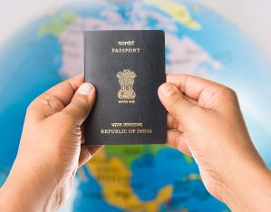
Ministry of Youth Affairs Launches ‘Friends of MY BharatMY BharatMera Yuva Bharat, launched 31 October 2023 (Rashtriya Ekta Diwas)’
- The Ministry of Youth Affairs and Sports launched ‘Friends of MY Bharat’, a digital initiative to connect Indian-origin youth abroad with India’s youth programmes.
- Announced by MoS Raksha Khadse at the BRICS Youth Summit 2026 in Gandhinagar, Gujarat.
- A digital engagement module under MY Bharat for Indian-origin students, young professionals and youth living outside India.
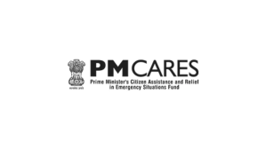
PM CARESPM CARESPrime Minister’s Citizen Assistance and Relief in Emergency Situations FundEx-officio trustees: Ministers of Defence, Home Affairs and Finance Fund Closing Balance Rises to ₹8,452 Crore in FY 2024-25
- Closing balance about ₹8,452.07 crore on 31 March 2025, up about 18% from ₹7,173.03 crore.
- About 93% (₹7,846.65 crore) was in fixed deposits; ₹605.41 crore in savings accounts.
- Interest earned: nearly ₹475 crore (₹469.37 crore FDs + ₹5.77 crore savings).
- Domestic donations FY25: about ₹479.05 crore (FY24: ₹681.81 crore). Foreign donations: about ₹0.93 crore (FY24: ₹1.14 crore).
- Set up in March 2020 (COVID-19) for public-health emergencies, disasters and other distress.
- A public charitable trust funded by voluntary contributions, not budgetary support. The Prime Minister is its ex-officio Chairperson.
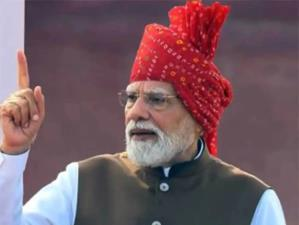
🎯 Likely QPM Modi’s Independence Day Speech Shortest in 4 Years
- PM Modi’s speech on the 80th Independence Day (15 August 2026) lasted 75 minutes: his shortest in four years and fourth-shortest ever.
- His 13th consecutive address from the Red Fort.
- First speech (2014): 65 minutes. Longest: 2025, 103 minutes.
- Most consecutive addresses: Jawaharlal Nehru, 17 (1947–1963), then Modi, 13 (2014–2026).
- In 2025 he passed Indira Gandhi’s record by giving his 12th consecutive speech.
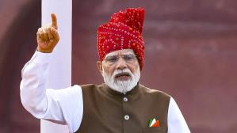
🎯 Likely QPM Modi’s 80th Independence Day Address: Major Announcements & ‘Sapt Dhara’
- Free online coaching for students from poor and middle-class families preparing for competitive exams.
- AI-skilling for 1 crore youth within one year.
- A nationwide sports talent-identification programme (villages, cities, schools) for children aged 5–15.
- ‘Sapt Dhara’ (seven streams of India’s strength): Manufacturing · Agriculture & Food Production · Technology & Innovation · Gati Shakti · Defence Capabilities · Green & Blue Economy · India’s Soft Power.
NIELIT Launches ‘Cyber Kushti 2026’ — National Cybersecurity & AI Hackathon
- NIELIT launched Cyber Kushti 2026, a national cybersecurity and AI hackathon.
- Launched by NIELIT Director General Prof. (Dr.) M. M. Tripathi. NIELIT works under MeitYMeitYMinistry of Electronics and Information TechnologyRuns Digital India.
- It tests and recognises human judgement in cyber security assessment.
- Run with the ISAC Foundation under the National Security Database (NSD); CERT-InCERT-InIndian Computer Emergency Response Team, est. 2004, under MeitYNIELIT HQ New Delhi is the Knowledge Partner.
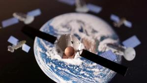
IN-SPACeIN-SPACeIndian National Space Promotion and Authorization CentreEst. 2020HQ AhmedabadAuthorises private space activity Proposes ₹500 Crore Third-Party Insurance for Space Activities
- IN-SPACe proposed that launch operators take third-party insurance of up to ₹500 crore.
- It would cover damage to people, property on the ground, and other satellites or space objects.
- IN-SPACe: single-window agency for private space activity; autonomous, under the Department of Space; formed 24 June 2020; HQ Bopal, Ahmedabad.
2States
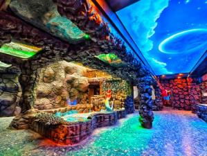
🎯 Likely QIndia’s First Virtual Zoo Opens in Indore, Madhya Pradesh
- India’s first virtual zoo opened at the Indore ZooIndore ZooKamla Nehru Prani SangrahalayaMP capital Bhopal, Madhya Pradesh.
- A 14-D cinema and a virtual jungle safari also opened.
- Inaugurated by MP Chief Minister Dr Mohan Yadav.
Karnataka Announces 7.5% Reservation for Rural School Students
- Karnataka announced the Vidyarthi Sahayahastha Scheme for students who studied in rural government schools.
- They get a 7.5% special horizontal reservation in admissions to professional courses (medical, engineering and others).
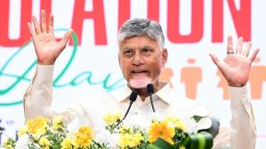
Andhra PradeshAndhra PradeshCapital AmaravatiCM N. Chandrababu NaiduGovernor Syed Abdul NazeerNational parks Sri Venkateswara, Rajiv Gandhi (Rameswaram), PapikondaTiger reserve Nagarjunasagar-Srisailam Launches ‘Pillale Sampada’ Initiative
- AP CM N. Chandrababu Naidu launched “Pillale Sampada”, meaning “Children are Wealth”.
- Idea: move from population control to population conservation, keeping a healthy balance of children, working-age and elderly people.
- Under Talliki Vandanam, the state gives ₹15,000 per child for education.
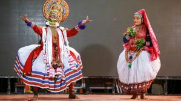
Onam: Athachamayam Procession Marks Start of Celebrations
- Onam is the biggest traditional festival of Keralam.
- The Athachamayam procession at Tripunithura (Ernakulam) marked the start of the 10-day celebrations.
- Folk arts performed included Pulikali, the “Tiger Dance”.
- Onam is a harvest and cultural festival of Malayalis, held in the Malayalam month of Chingam (August–September).
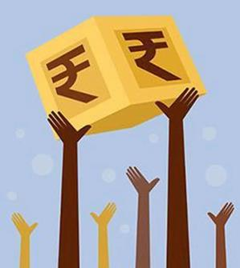
ADB ADBAsian Development BankEst. 19 December 1966HQ Manila, Philippines69 members (69th: Israel)Publishes the Asian Development Outlook Approves $182.89 Million Loan to Strengthen Karnataka Public Schools
ADBAsian Development BankEst. 19 December 1966HQ Manila, Philippines69 members (69th: Israel)Publishes the Asian Development Outlook Approves $182.89 Million Loan to Strengthen Karnataka Public Schools
- The ADB approved a $182.89 million loan under the Strengthening Karnataka Public Schools Program.
- It will set up 500 integrated public school clusters, from pre-primary to secondary level.
- In addition, the International Finance Facility for Education (IFFEd) gives a $10 million grant and a $25 million guarantee.
3Environment & Heritage
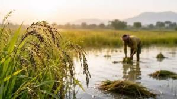
🎯 Likely QAssam’s Borjuli Wild Rice Site Declared Biodiversity Heritage Site
- Borjuli in Sonitpur district, Assam, was notified as a Biodiversity Heritage Site (BHS).
- Under a wild rice conservation project funded by the National Rainfed Area Authority (NRAA), running since 2022.
- Wild rice: Oryza rufipogon; the aim is to protect it in its natural habitat.
- Carried out by ICAR-National Bureau of Plant Genetic Resources (New Delhi) with the Assam State Biodiversity Board.
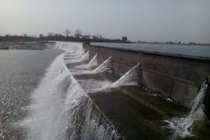
🎯 Likely QParichha Dam in Jhansi Gets World Heritage Irrigation Structure Recognition
- The 140-year-old Parichha Dam/Weir, Jhansi (UP), was selected by the ICIDICIDInternational Commission on Irrigation and Drainage, est. 1950, HQ New DelhiBetwa is a tributary of the Yamuna as a World Heritage Irrigation Structure (WHIS).
- It will receive the WHIS Award 2026 at the 26th ICID International Congress in Marseille, France.
- A structure should generally be more than 100 years old to qualify.
- It is on the Betwa River.
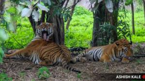
🎯 Likely QCentre Identifies 25 Tiger Reserves for Priority Conservation
- MoEFCC identified 25 of India’s 58 tiger reserves as “potential recipient sites” needing priority help (no tigers, very few, declining numbers or poor prey).
- Reports released by Environment Minister Bhupender Yadav in Alwar, Rajasthan, marking 18 years of tiger reintroduction at Sariska.
- Reserves with zero tigers: Satkosia (Odisha), Kawal (Telangana), Buxa (West Bengal), Dampa (Mizoram), Kamlang (Arunachal Pradesh).
- Newest reserves, 51–58 (PDF chart): Srivilliputhur-Megamalai (TN), Ramgarh Vishdhari (Raj), Ranipur (UP), Veerangana Durgavati (MP), Dholpur-Karauli (Raj), Guru Ghasidas–Tamor Pingla (CG), Ratapani (MP), Madhav (MP).
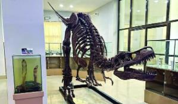
Mizoram’s Natural History Museum Becomes India’s 21st Designated Repository
- The Natural History Museum of Mizoram University was notified as India’s 21st Designated Repository under the Biological Diversity Act, 2002.
- Granted by MoEFCC on the recommendation of the National Biodiversity Authority (NBANBAEst. 2003HQ ChennaiMizoram capital Aizawl).
- It will preserve authenticated biological specimens for research, species identification and conservation.
- Repository = an authorised scientific storehouse for plant, animal, fungal and other specimens.
4Banking, Finance & Markets
🏦 BankingQatarQatarCapital DohaCurrency Qatari riyalUniversal Postal Union est. 1874, HQ Bern–India UPI-Based Remittance Service Launched
- PosTransfer powered by UPI
 UPIUnified Payments InterfaceLaunched 2016 by NPCI lets people in Qatar send money directly to UPI-enabled bank accounts in India.
UPIUnified Payments InterfaceLaunched 2016 by NPCI lets people in Qatar send money directly to UPI-enabled bank accounts in India. - Partners: Qatar Post, India Post, the Universal Postal Union’s Interconnection Platform (UPU-IP) and NIPLNIPLNPCI International Payments LtdInternational arm of NPCITakes UPI and RuPay abroad.
- The sender visits a Qatar Post outlet with the recipient’s UPI ID and identification details.
- Limits: QAR 10 to QAR 4,000 per transaction, capped at ₹1,00,000. Flat fee: QAR 15.
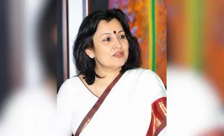
🏦 BankingShabnam Sinha Appointed Chairperson of Airtel Payments Bank
- Airtel Payments Bank appointed Shabnam Sinha as Chairperson for a three-year term, after RBI
 RBIReserve Bank of IndiaEst. 1 April 1935 (RBI Act 1934)Nationalised 1949HQ Mumbai approval.
RBIReserve Bank of IndiaEst. 1 April 1935 (RBI Act 1934)Nationalised 1949HQ Mumbai approval. - Non-Executive Chairman Sunil Bharti Mittal will leave the Board on 30 September 2026.
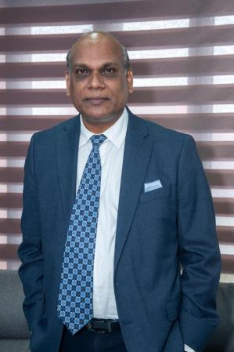
🏦 BankingDr Haragopal Yandra Appointed MD of NABFINS
- Dr Haragopal Yandra became Managing Director of NABFINS Ltd, HQ Bengaluru.
- He was earlier MD of NABCONS (NABARD
 NABARDNational Bank for Agriculture and Rural DevelopmentEst. 12 July 1982HQ MumbaiMinistry of Finance Consultancy Services), New Delhi.
NABARDNational Bank for Agriculture and Rural DevelopmentEst. 12 July 1982HQ MumbaiMinistry of Finance Consultancy Services), New Delhi. - NABFINS: a NABARD subsidiary in microfinance and financial inclusion; an RBI-registered non-deposit-taking NBFC.
🏦 BankingBSEBSEFounded 9 July 1875Asia’s oldest stock exchangeHQ MumbaiMD & CEO Sundararaman RamamurthyChairman Subhasis ChaudhuriIndex Sensex and PHDCCI Partner to Expand Equity Financing for MSMEs
- BSE and the PHD Chamber of Commerce and Industry signed an MoU to promote equity financing for MSMEs.
- Focus: awareness about raising funds on the BSE SME Platform.
5International
Hakainde Hichilema Re-elected President of ZambiaZambiaLandlocked, Southern AfricaCapital LusakaCurrency Kwacha
- Hakainde Hichilema was re-elected for a second five-year term; he first became President in 2021.
🎯 Likely QIndia Launches Campaign for UNSC Non-Permanent Seat for 2028–29
- EAM Dr S. Jaishankar launched India’s candidature for a non-permanent UNSC seat for 2028–29, at the UN HQ in New York.
- Guiding vision: SHANTI — Securing Holistic Advancement through Norms, Trust and Integrity.
- India has served eight terms; the latest was 2021–22.
- UNSC: the only UN body that can make legally binding decisions. Formed 24 October 1945; HQ New York.
- 5 permanent veto members (UK, China, France, Russia, US) and 10 elected members, 5 of them elected each year.
6Defence
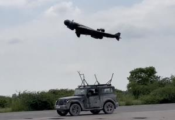
Kawa UAV Conducts Maiden Flight of Jet-Powered ‘Divyastra Mk3’ Loitering Munition
- Kawa UAV Pvt Ltd (HoverIt) flew Divyastra Mk3, a jet-powered loitering munition developed in India, for the first time.
- Kawa UAV is a Lucknow-based defence-technology company.
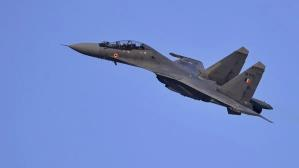
🎯 Likely QMinistry of Defence Notifies 6th Positive Indigenisation List with 405 Items
- MoD notified the 6th Positive Indigenisation List (PIL) with 405 defence items to be bought only from Indian sources, on set timelines.
- Expected business for Indian industry: about ₹3,070 crore.
MoD Leases Two MQ-9B SeaGuardian Drones for Indian Navy
- MoD signed a contract with General Atomics Aeronautical Systems (GA-ASIGA-ASIAmerican company, HQ San Diego, CaliforniaIndia ordered 31 MQ-9Bs in October 2024 (15 SeaGuardian, 16 SkyGuardian)) to lease two MQ-9B SeaGuardian drones for the Indian Navy.
- They are HALE (High-Altitude Long-Endurance) remotely piloted aircraft; lease period 30 months.
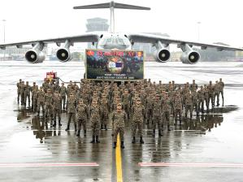
🎯 Likely QIndia–ThailandThailandCapital BangkokCurrency Baht Joint Military Exercise ‘MAITREE 2026’
- The 15th edition of Exercise MAITREE between the Indian Army and Royal Thai Army.
- Venue: Vibhavadi Rangsit Camp, Surat Thani, Thailand.
- Indian contingent mainly from the Gorkha Rifles.
Indian Army Organises ‘Adab Aur Saqafat – Literary Festival 2026’ in Kargil
- Held at Government Degree College, Kargil, LadakhLadakhUnion Territory since 31 October 2019, celebrating the region’s literary, cultural and artistic heritage.
- Theme: “Celebrating the Culture of Ladakh Highland”.
7Science, Technology & Events
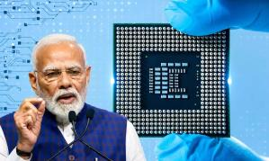
🎯 Likely QPM Modi to Inaugurate 5th Edition of SEMICON India 2026
- PM Modi will open the 5th edition of SEMICON India 2026 at YashobhoomiYashobhoomiIndia International Convention and Expo Centre, Dwarka, New DelhiFirst SEMICON India: 2022, Bengaluru, New Delhi.
- Theme: “Silicon to Systems: Building the Ecosystem”.
- Organisers: India Semiconductor Mission (ISM), MeitYMeitYMinistry of Electronics and Information TechnologyRuns Digital India and SEMI (global semiconductor industry association).
- Semicon India Programme 1.0: approved 15 December 2021, outlay ₹76,000 crore, 12 projects; in commercial production: Micron, Kaynes, CG Semi.
- Semicon 2.0: approved 15 July 2026, outlay ₹1,27,500 crore.
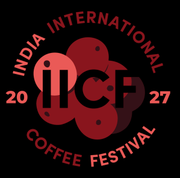
3rd India International Coffee Festival to Be Held in Bengaluru
- The Coffee BoardCoffee BoardEst. 1942HQ BengaluruKarnataka is India’s largest coffee producer of India, with the Specialty Coffee Association of India (SCAI), will hold the 3rd India International Coffee Festival (IICF) 2027 in Bengaluru from 26 February 2027.
- Participants expected from more than 50 countries.
- It will host the 26th National Barista Championship; the winner represents India at the World Barista Championship.
8Sports
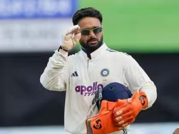
🎯 Likely QRishabh Pant Becomes First Indian to Hit 100 Test Sixes
- Rishabh Pant became the first Indian to hit 100 sixes in Test cricket, and only the 4th player overall.
- 100+ Test sixes: Ben Stokes 138 · Brendon McCullum 107 · Adam Gilchrist 100 · Rishabh Pant 100.
- Fastest to 100 Test sixes: 51 Tests, 89 innings, 4,918 balls.
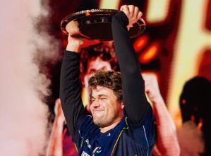
Magnus Carlsen Wins Esports World Cup Chess Title Again
- Magnus Carlsen (Norway) won the Esports World Cup 2026 chess title in Paris, defending his 2025 title.
- Playing for Team Liquid, he beat Belarus’s Denis Lazavik 2–0 in the final.
- Hikaru Nakamura (USA) took third, beating Alireza Firouzja 4–1.
- Prize: Carlsen $250,000; Lazavik $190,000; total pool $1.5 million.
9Important Days
🎯 Likely QWorld Humanitarian DayWorld Humanitarian Daydesignated by the UN General Assembly in 2008; first observed 2009 — 19 August
- Observed every year on 19 August to honour humanitarian workers.
- Marks the 19 August 2003 bomb attack on the Canal Hotel, Baghdad, which killed 22 aid workers, including UN Special Representative Sergio Vieira de Mello.
- 2026 campaign, led by UN OCHA: “Families of Fallen Humanitarians”.
World Photography Day — 19 August
- Celebrated every year on 19 August, honouring the art, history, science and power of photography.
10Obituaries
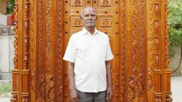
Veteran Sculptor Chandrashekhar Y. Shilpi Passes Away
- Sculptor and master craftsman Chandrashekhar Y. Shilpi passed away.
- He received the National Award for Master Craftspersons for 2024 (Handicrafts Department, Ministry of Textiles), presented by President Droupadi Murmu.
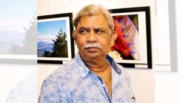
Veteran Filmmaker Raja Sen Passes Away at 71
- Bengali filmmaker Raja Sen died aged 71: film, TV and documentary director, three-time National Film Award winner.
- His debut feature Damu won the National Film Award for Best Children’s Film.
11Books
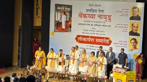
🎯 Likely QHindi Biography of Former Vice President M. Venkaiah NaiduM. Venkaiah NaiduIndia’s 13th Vice President (2017–2022) Released
- Released by Defence Minister Rajnath Singh and Delhi CM Rekha Gupta.
- Written by former Rajya Sabha MP Y. Lakshmi Prasad.
- Title: Janpriya Neta Venkaiah Naidu: Udayagiri se Uparashtrapati Tak.
🎯 Likely QSonia Gandhi’s Memoir ‘Belonging: A Journey of Love’
- Sonia Gandhi will release her memoir “Belonging: A Journey of Love”.
- Publisher: Alfred A. Knopf.
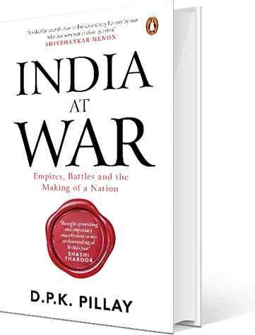
Book: ‘India at War’ by Col. D.P.K. Pillay
- Title: India at War (subtitle on the cover: “Empires, Battles and the Making of a Nation”).
- Author: Col. D.P.K. Pillay.
12Self-test
Answer out loud first, then click to check. Re-test the ones you missed tomorrow.
MPMS — outlay, period and base incentive?
₹62,500 crore; FY 2026-27 to 2030-31; 2.25–5% sales-linked incentive
Which scheme does MPMS replace, and when did it end?
PLI-LSEM; ended 31 March 2026
Where is India’s first virtual zoo?
Indore Zoo, Madhya Pradesh
Karnataka’s Vidyarthi Sahayahastha Scheme gives what?
7.5% special horizontal reservation in professional courses for rural government-school students
What does “Pillale Sampada” mean, and which state launched it?
“Children are Wealth”; Andhra Pradesh
Onam’s Athachamayam procession is held where?
Tripunithura, Ernakulam (Kerala)
Borjuli BHS — district, and the wild rice’s scientific name?
Sonitpur, Assam; Oryza rufipogon
PM CARES closing balance on 31 March 2025?
≈ ₹8,452.07 crore (up ~18%)
Parichha Dam — river, district, and the body that named it a WHIS?
Betwa; Jhansi (UP); ICID
Duration of Modi’s 2026 Independence Day speech, and his longest?
75 minutes; longest 103 minutes (2025)
Nehru’s and Modi’s consecutive Red Fort addresses?
Nehru 17, Modi 13
What are the ‘Sapt Dhara’?
Seven streams: Manufacturing, Agriculture, Tech & Innovation, Gati Shakti, Defence, Green & Blue Economy, Soft Power
Cyber Kushti 2026 — organiser and knowledge partner?
NIELIT; CERT-In
Which ships were attacked in the Strait of Hormuz before ‘Seafarer-First’?
MT Al Bahiyah and MT Mombasa
How many tiger reserves are priority sites, out of how many?
25 of 58
Name the five tiger reserves with zero tigers.
Satkosia (Odisha), Kawal (Telangana), Buxa (WB), Dampa (Mizoram), Kamlang (Arunachal)
Greenfield shipbuilding cluster — site and SPV?
Kuchhadi, Porbandar; NSHIP-Gujarat
India’s 21st Designated Repository?
Natural History Museum, Mizoram University
ADB loan for Karnataka schools — amount and clusters?
$182.89 million; 500 integrated public school clusters
Who heads NABFINS now, and where is it headquartered?
Dr Haragopal Yandra; Bengaluru
New Chairperson of Airtel Payments Bank?
Shabnam Sinha (3-year term)
Qatar–India remittance service — name and per-transaction cap?
PosTransfer powered by UPI; QAR 4,000 / ₹1 lakh; fee QAR 15
Who has the most Test sixes, and where is Pant?
Ben Stokes (138); Pant is 4th with 100, first Indian
Whom did Carlsen beat in the Esports World Cup chess final?
Denis Lazavik (Belarus), 2–0
6th Positive Indigenisation List — items and business value?
405 items; ≈ ₹3,070 crore
MQ-9B lease — how many, for which service, how long?
2 SeaGuardians, Indian Navy, 30 months
MAITREE 2026 — edition, venue, Indian regiment?
15th; Surat Thani, Thailand; Gorkha Rifles
SEMICON India 2026 — venue and theme?
Yashobhoomi, New Delhi; “Silicon to Systems: Building the Ecosystem”
Semicon 2.0 — approval date and outlay?
15 July 2026; ₹1,27,500 crore
India’s UNSC bid — term and vision name?
2028–29; SHANTI
IN-SPACe’s proposed third-party insurance cover?
Up to ₹500 crore
Why is World Humanitarian Day on 19 August?
Canal Hotel bombing, Baghdad, 19 Aug 2003 (22 aid workers killed)
Author of the Hindi biography of Venkaiah Naidu?
Y. Lakshmi Prasad
Sonia Gandhi’s memoir and its publisher?
“Belonging: A Journey of Love”; Alfred A. Knopf
⚡ Rapid Revision
- MPMS ₹62,500 cr (FY27–31): 2.25–5% + 1.5% sourcing + 3% Indian R&D; replaces PLI-LSEM · Porbandar (Kuchhadi) shipbuilding cluster via NSHIP-Gujarat; Vadinar repair ₹1,570 cr.
- Seafarer-First (Sonowal, Hormuz) · Friends of MY Bharat (Raksha Khadse, BRICS Youth Summit, Gandhinagar) · PM CARES ₹8,452 cr (+18%) · IN-SPACe insurance ₹500 cr · Cyber Kushti (NIELIT, CERT-In).
- Independence Day 2026: 75 min, 13th in a row (Nehru 17); longest 103 min (2025) · AI skilling 1 crore youth · Sapt Dhara = 7 streams.
- States: first virtual zoo Indore · Karnataka 7.5% horizontal quota (rural govt schools) · AP Pillale Sampada (“Children are Wealth”), Talliki Vandanam ₹15,000 · Onam Athachamayam, Tripunithura · ADB $182.89 mn, 500 Karnataka school clusters.
- Borjuli (Sonitpur, Assam) BHS — Oryza rufipogon · Parichha Dam (Betwa, Jhansi) WHIS by ICID · 25 of 58 tiger reserves priority; zero tigers: Satkosia, Kawal, Buxa, Dampa, Kamlang · Mizoram Univ museum = 21st Designated Repository.
- Banking: PosTransfer UPI Qatar→India (QAR 10–4,000, fee QAR 15) · Shabnam Sinha chairs Airtel Payments Bank · Haragopal Yandra MD NABFINS · BSE–PHDCCI MoU for SME equity.
- International: Hichilema re-elected (Zambia) · UNSC bid 2028–29, SHANTI vision, 8 past terms.
- Defence: Divyastra Mk3 (Kawa UAV, Lucknow) · 6th PIL 405 items (₹3,070 cr) · 2 MQ-9B leased for Navy (30 months) · MAITREE 15th (Surat Thani, Gorkha Rifles) · Adab Aur Saqafat, Kargil.
- SEMICON India 5th, Yashobhoomi; Semicon 1.0 ₹76,000 cr, 2.0 ₹1,27,500 cr · 3rd IICF Bengaluru from 26 Feb 2027.
- Pant first Indian to 100 Test sixes (Stokes 138 tops) · Carlsen retains Esports World Cup chess (beat Lazavik 2–0) · 19 Aug: World Humanitarian Day + World Photography Day.
- Obits: Chandrashekhar Y. Shilpi (sculptor), Raja Sen (Bengali filmmaker, Damu) · Books: Venkaiah Naidu Hindi bio (Y. Lakshmi Prasad) · Sonia Gandhi “Belonging” (Knopf) · “India at War” (D.P.K. Pillay).
End of August 2026 · Class 7